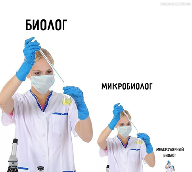
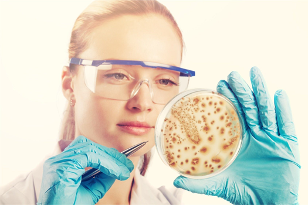
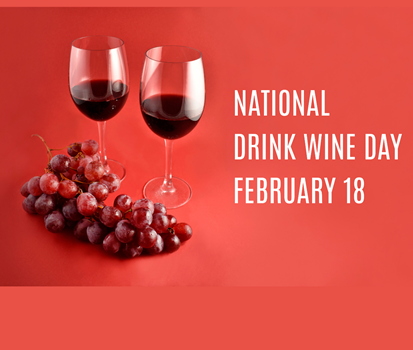

Events
Microbiologist day
Though started recently, this day is now celebrated worldwide and supported by UNESCO as well. Cras facilisis, nulla velew viverra auctor, leo magna sodales felis, quis wertoli malesuada nibewery we. The Portuguese Society of Microbiology (SPM) established September 17 as International Microorganism Day to commemorate the day in 1863 when Anton van Leeuwenhoek first reported his description of single-celled organisms to the Royal Society of London.
 National Wine Day
Nerde sas facilisis, nulla velew viverra auctor, leom magna sodales lisylomi, quis wertoli malesuada nibewery we destrolike. Vivamus at magna non nunc tristique rhoncus. Uam nibh ante, egestas id dictum a, commodo luctus wert libero. Praesent faucibus malesuada faucibusylo we. Donec laoreet metus id laoreetsuadawer.
